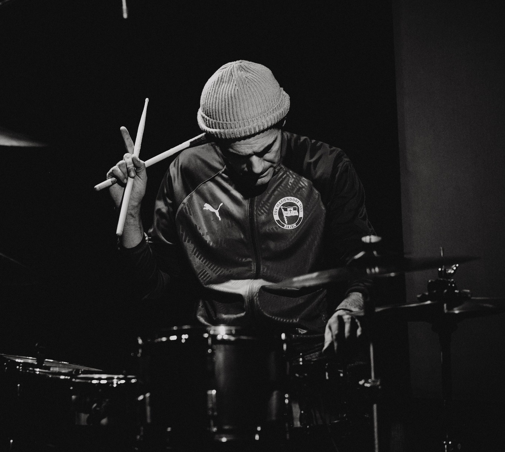
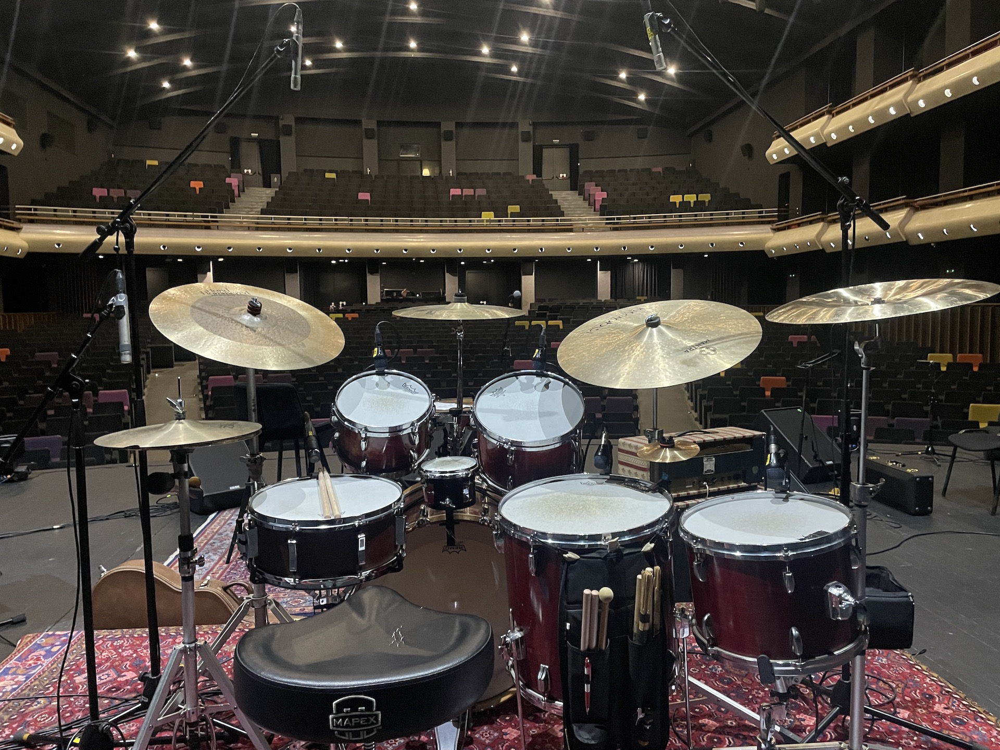

Rambo Amadeus
Uživo nastupi i saradnja.
Pogledaj video
Inovativan spoj akustičnih bubnjeva i virtuelnih instrumenata. Koncept koji bubnjaru daje slobodu da stvara muziku u realnom vremenu sa virtuelnim ansamblom.
Saznaj više
Profesionalno snimanje bubnjeva, audio produkcija i aranžiranje u kreativnom studijskom okruženju.
Saznaj više
Pregled autorskih izdanja i albuma. Poslušajte muziku i naručite originalne CD formate.
Pogledaj izdanjaIzbor sa nastupa uživo, studijskih sesija i autorskih projekata.
Uživo nastupi i saradnja.
Pogledaj video
Projekti i živa izvođenja.
Pogledaj video
Fuzija i ritam sekcija.
Pogledaj video
Istraživanje zvuka i solo performansi.
Pogledaj video